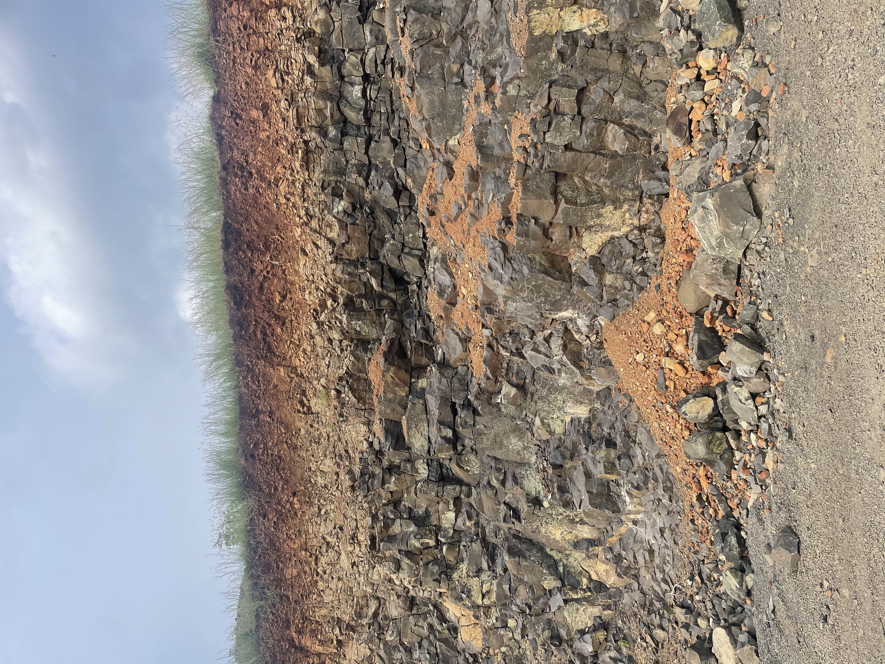
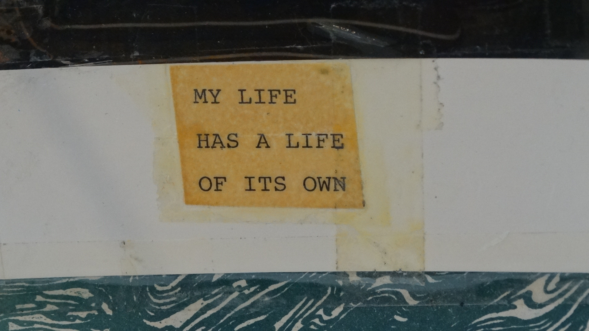

Jonah
Bernstein-
Schalet
I think about how we can maximize human action for planetary good. I also think about the meaning of these terms: truth, reason, science, practical knowledge.
↓
Strata
Things I've done
Things I think about
How do we account for sulfuric acid in carbon cycle frameworks?

Can rock dissolve fast enough to sustain a viable carbon removal strategy?
Sometimes, noise can deceive us matisandbox.com →
Rice is the most interesting plant on earth. How can we get the most of it?
2019·01
MODIS fire pixel-days since Jan 2019
